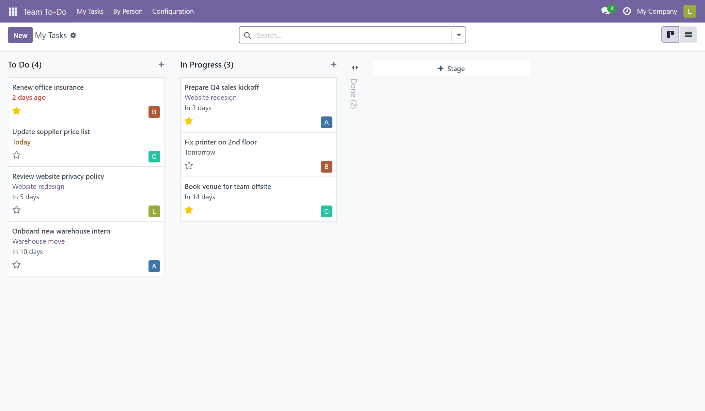

A companion to Team To-Do. It adds an optional link from each task to a project of the Project app, so quick team to-dos and full project work live side by side without duplicating anything.

The project name on the card is a link. Click it and you land on the task list of that project, exactly where the Project app would take you.
Search by project, group the kanban or the list by project, and add the project column to the list view. Tasks without a project stay exactly as they were.
Nothing to configure. The module is installed automatically as soon as Team To-Do and the Project app are both present, and Team To-Do keeps working without it.
Questions and bug reports: soporte@cimalor.com or the issue tracker at github.com/cimalor-apps/addons. We answer within 48 to 72 business hours.
Free software under the LGPL-3 license. Made by Cimalor.